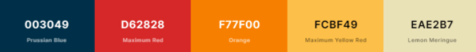
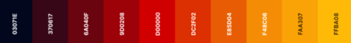
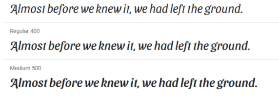
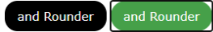
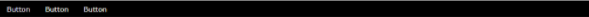

Guía de estilos web.
- Definir la audiencia a escoger (público).
Por definir (Identificar tu público) ~ ‘jóvenes’
- Colores de tu marca 3 o 4 (Paleta de colores).
El logotipo y banner seria en uno de esos colores mezclado con otro.

https://coolors.co/003049-d62828-f77f00-fcbf49-eae2b7

https://coolors.co/03071e-370617-6a040f-9d0208-d00000-dc2f02-e85d04-f48c06-faa307-ffba08
Negro/azul/morado y rojo burdeos, rojo claro.
- Fuente (Escoger tipografía de google fonts).

Sansita swashed. https://fonts.google.com/specimen/Sansita+Swashed
- Botones a elegir.

- Barra navegación.

- Crear un moodboard (imágenes que representen a la marca y empresa).
- Elección del tono.
- Imágenes.
Informal y con un patron de lectura en ‘Z’, ya que sería para los jóvenes.
Usaremos imágenes de tamaño medio, que se puedan descargar y de calidad media.
Guia de estilo.
https://www.staffcreativa.pe/blog/crear-una-guia-de-estilo-de-diseno-web/